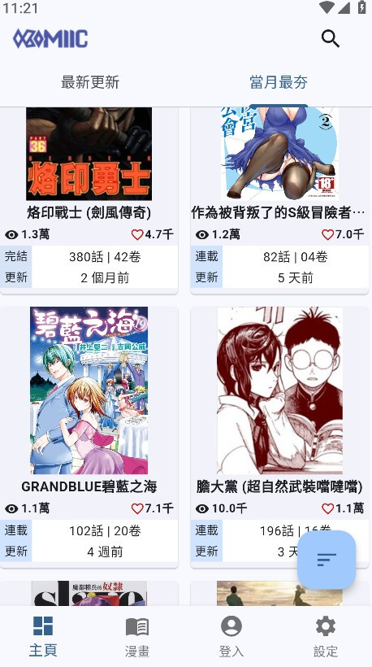
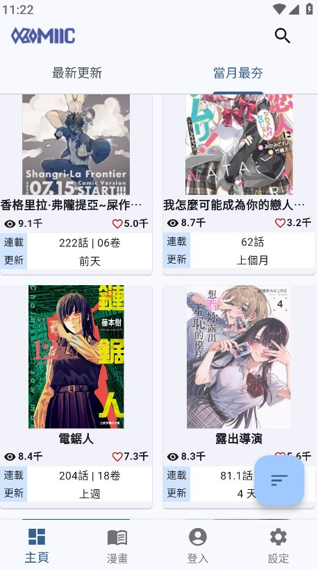
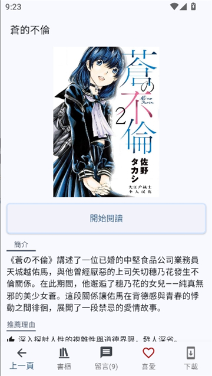

第一次看漫画就上手——Komiic 完全不用懂的入门指南
从没装过漫画 App 的新手也能五分钟跑通：从哪里装、怎么搜、收藏后去哪找，三个最值得先玩的功能帮你把看漫画变成一件顺手的事。
这篇能带你从完全不懂到用起来，不需要任何基础。你不需要知道什么是开源客户端，也不需要会折腾网络配置——跟着步骤走，五分钟之内就能在手机上看到第一部漫画。
它到底是干嘛的——一个生活化类比
想象一下：你家楼下有个自动书柜，书柜里堆着各种各样的漫画，从日漫韩漫到国漫都有。你扫一下门上的二维码就能打开，翻开哪本就从哪本继续看，而且你在手机上标了"想追的"，换个平板登录同一个账号，那些标记、看到第几章、甚至分好的文件夹，全部跟着你走。
Komiic官网 就是这么一个书柜——只不过它不在楼下，在你手机里。它是一个专门用来发现和阅读漫画的 Android 应用，把很多不同来源的漫画资源聚合在一起，让你不用在好几个平台之间来回切换。

五分钟上手——从下载安装到第一次跑通
第一步：把 App 装到手机上
先从官方下载拿安装包装到手机里就行，其他先不用管。装好之后在桌面图标里找到它，点一下打开。
第二步：注册一个账号
第一次打开时大概率会让你注册——别跳过，这个账号是后面所有"同步"功能的钥匙。用一个邮箱注册就行，不需要手机号，也不需要填密码之外的任何信息。注册完登录，回到主页。
第三步：搜一部你想看的漫画
主页右上角有个放大镜图标，点进去就是搜索框。
这里有一个新手最容易踩的坑：别只用简体中文搜。很多漫画资源的标题是繁体、英文甚至日文的。比如你想找《蓝色监狱》，简体搜不到的话，试试"藍色監獄"或者"Blue Lock"，命中率立刻上来。标题也不用输全——取最核心的两三个字就行，比如只搜"監獄"，结果会更多。
搜到之后点进去，你会看到这部漫画的章节列表，按顺序从上往下排。

第四步：点一章，开始看
随便点一章（一般第一章或最新一话都行），进入阅读器。默认的竖屏翻页模式适合大多数场景——大拇指在屏幕上左右划，就是翻页。如果是韩漫条漫，上下划更舒服，在阅读器里呼出工具栏（一般是点一下屏幕中央），找到"閱讀模式"切换成滚动就行。
恭喜——你已经跑通了完整流程：安装 → 注册 → 搜索 → 阅读。
上手后先玩这三个功能
跑通之后别着急到处点，先把下面这三个功能摸透，能帮你把"看漫画"这件事从"能看"变成"顺手"。
功能一：收藏——下次打开直接找到
在漫画详情页找一颗星星或者"加入收藏"按钮，点一下。然后回到主页，底部或侧边栏一般有个"收藏"入口，你收藏的所有漫画都在里面。正在追的更放心——下次打开直接点进来就能继续看，不用重新搜索。
功能二：夜间模式——深夜追漫必备
晚上关灯看漫画时，屏幕的白光会让眼睛很不舒服。呼出阅读器工具栏，找到"夜間模式"或者深色主题选项，打开它。屏幕背景会变成接近黑色的深灰，整体亮度降低，眼睛瞬间轻松很多。

如果你的手机本身也开着系统夜间模式，两个叠加用效果更好——系统管整个屏幕的色温，Komiic 管阅读器内部的背景色，暗光环境下的体验提升非常明显。亮度、对比度、冷暖色调的进阶调整项，在komiic文档里有详细说明。
功能三：云同步——换手机也不怕
这就是为什么刚才让你注册账号的原因。你在 A 手机上看到《进击的巨人》第 15 章，在 B 平板上登录同一个账号，打开这部漫画直接跳到第 15 章。你在 A 上把收藏里的漫画分到了不同文件夹，B 上也一模一样。
同步会自动发生——收藏、阅读进度、书柜分组都是实时的。而且同步的都是文本数据，耗流量极少，一般只会在 WiFi 下做完整同步，移动数据下只做增量更新。
小白的三个常见疑问
第一个：搜不到我想看的漫画怎么办？
先别急。按这个顺序试：把标题换成繁体、英文、日文罗马字分别搜一遍；换作者名搜（比如"尾田榮一郎"能把海贼王拉出来）；如果知道题材就去分类里慢慢翻。如果还是没有，可能是这部漫画刚连载，资源还没补进去——等几天再来看看，Komiic 的资源是社区持续维护的。
第二个：手机横过来的时候漫画方向乱转？
Komiic 默认跟随手机方向传感器自动切换横屏竖屏。如果你躺着看的时候手机转来转去打断阅读，呼出阅读器工具栏，找一下"方向鎖定"选项，手动指定竖屏或横屏。锁定之后阅读器内就不会再自动旋转了，退出阅读器后手机恢复正常行为。
一般来说，单手通勤用竖屏翻页最顺手；平板上看实体书扫描版或跨页大场面，横屏配双页模式效果最佳。
第三个：换设备之后收藏的漫画怎么没跟过来？
先确认两台设备登录的是同一个邮箱账号。然后在"我的"或"个人中心"里找一下同步状态页面，看看有没有报错。可以手动点一下"立即同步"触发一次全量同步，实在不行就退出登录再重新登录一次，强制重新同步。
另外要注意：离线下载的章节不会跟着账号同步——它们是物理文件存在手机存储里，换设备需要重新下载。只有收藏列表、阅读进度、书柜分组这些"信息类"数据会同步过去。
写在最后
到这里，你已经能用 Komiic 顺畅地看漫画了——从搜索、收藏、阅读到换设备同步，整条链路都走通了。
如果想再往前走一步，建议你摸一下阅读器里的各种模式：滚动、翻页、双页，分别适合什么类型的漫画，试过之后就能找到自己最舒服的阅读姿势。至于离线下载、书柜分组管理、阅读器细节调参这些进阶操作，等你看个三五部漫画之后自然会想起来去折腾——不用现在一次性全部搞明白。如果你想看更底层的细节或想帮忙维护，这套资料分别托管在GitHub、Gitee、GitCode，随便用哪个都行。